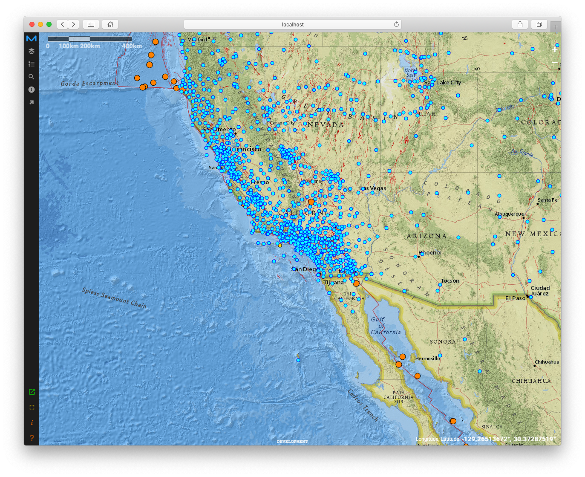
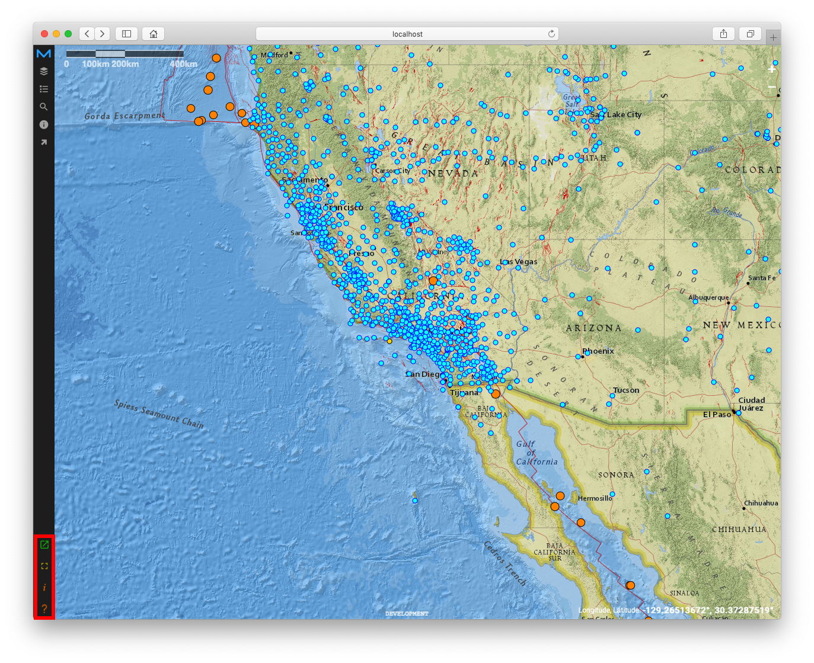
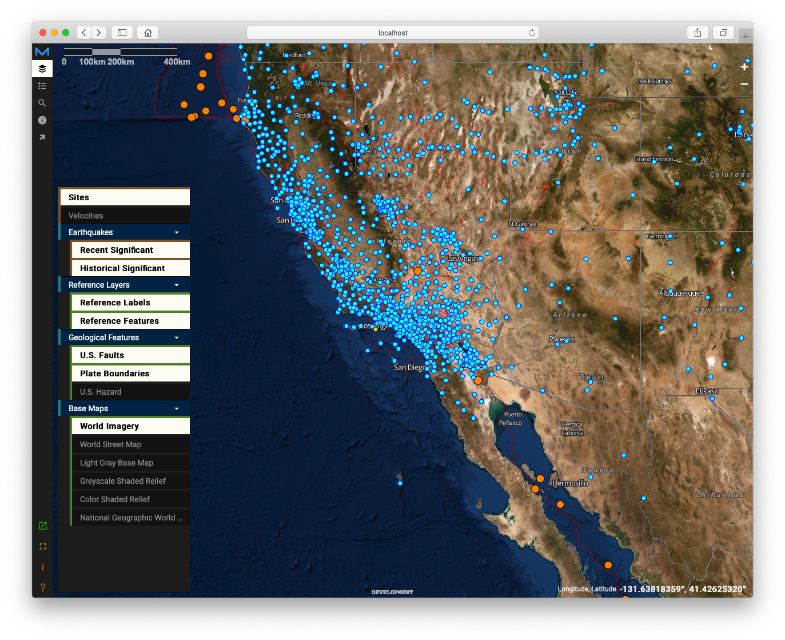
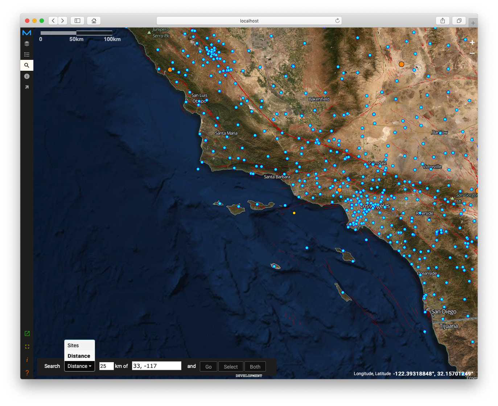
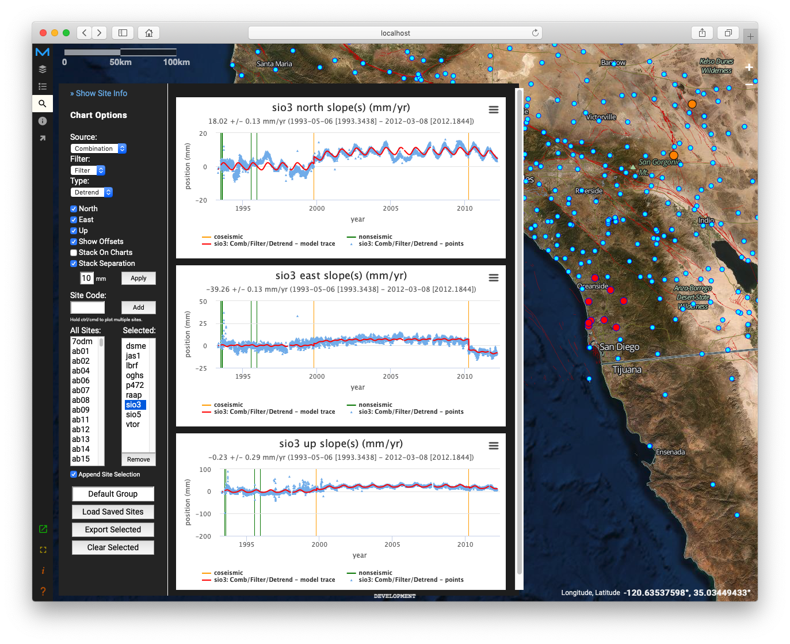
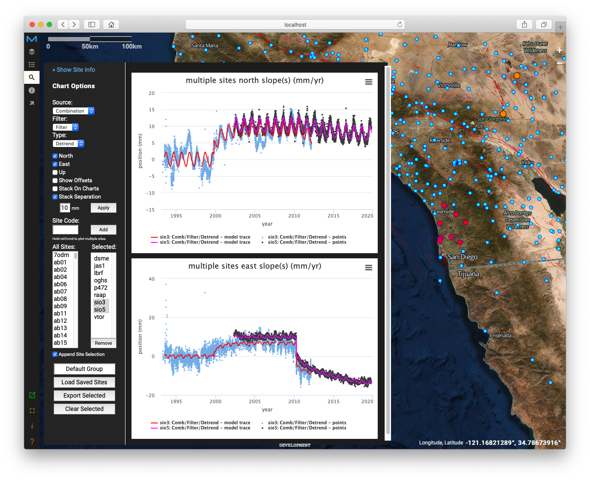
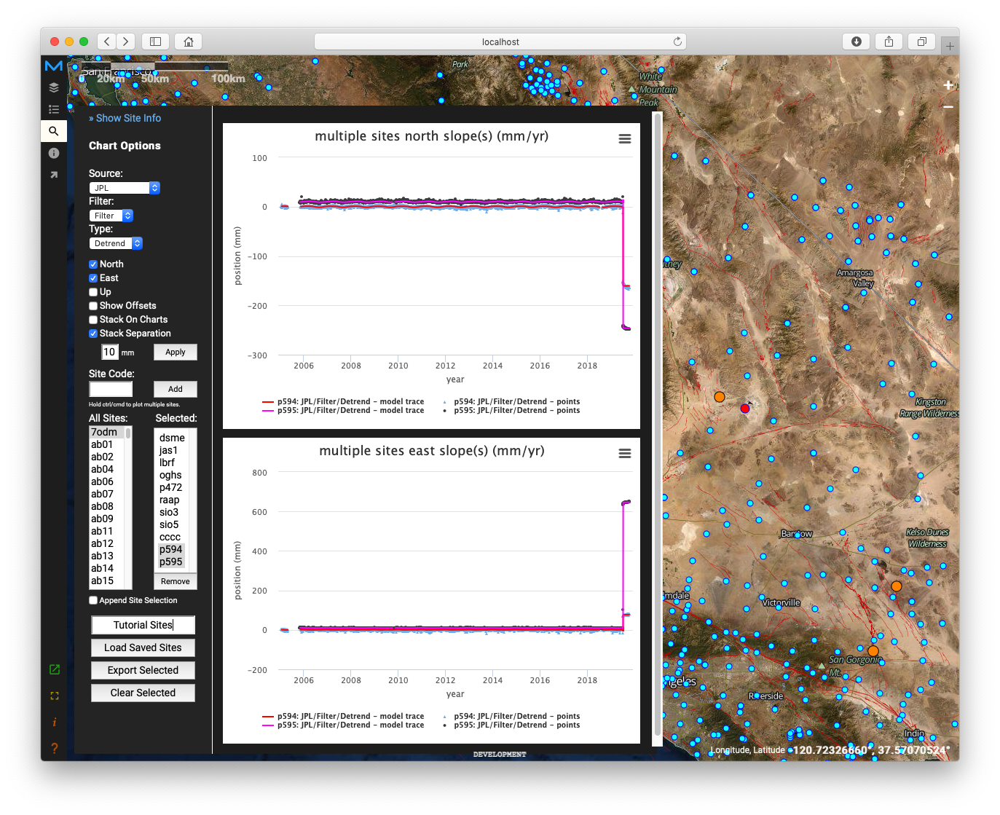
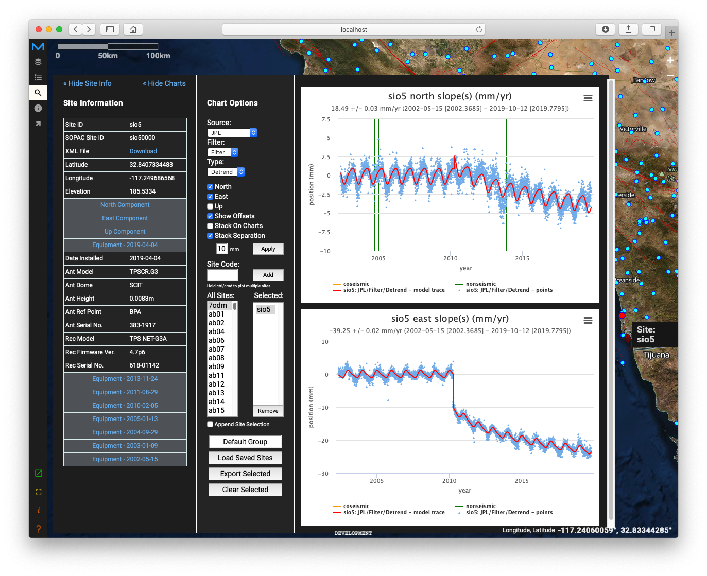
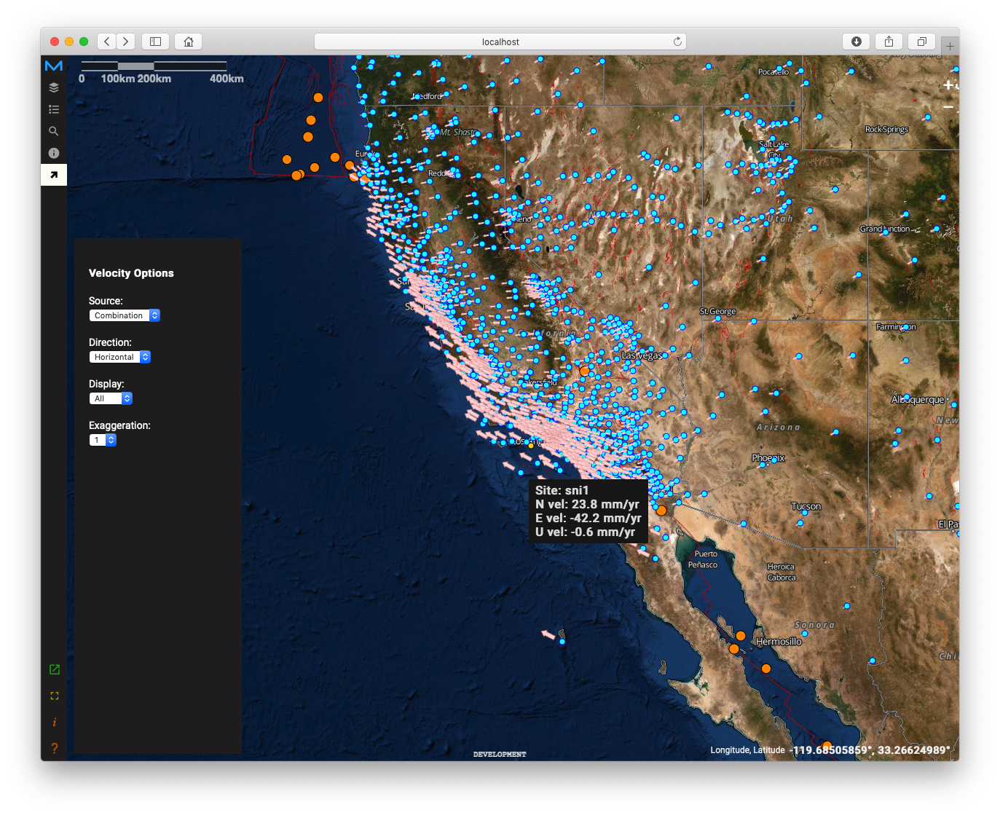
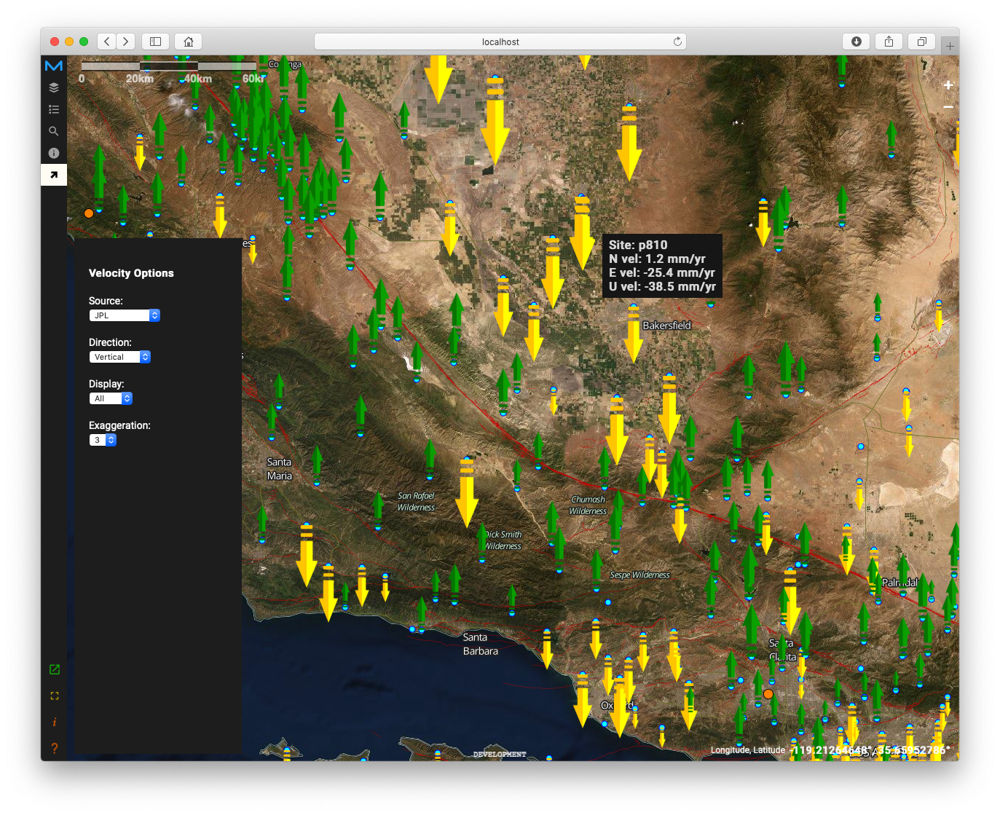

MGViz
The landing page displays a map view with the location of seismology measurement sites,
major/recent earthquakes, and a reference map.

You can zoom in and out of the map by scrolling or using the + and - buttons in the
top-right
corner.
You can pan around the map by clicking and dragging.
You can hover over markers on the map to see more information.
Clicking on a seismology site marker will open up a tool for viewing more information
about
that site.
The buttons on the left will open various tools and links.

The four buttons in the lower-left do the following (from top to bottom):
1. Copy a link of the website to share. The currently shown data layers will persist.
2. View the application in full screen.
3. Open a link to the project web site.
4. Open a link to this Help page.
The buttons on the top-left will open unique tools.

The Layers tool presents a list of several data layers to display on the map.
Several layers, including Sites, are activated by default.
Velocities may be activated to show arrows denoting the direction and magnitude of motion.
Earthquakes contains options to view different categories of historical earthquakes.
Reference layers contains labels and features that may be overlaid on base maps without
that
information.
Geological Features can be activated to show U.S. or global geological features.
Base Maps contains several reference maps that appear on the bottom of all the layers.
Activate one at a time for best results.

The Search tool allows you to zoom-to and select sites by ID or location.
You can switch between Site and Distance options.
The Distance option allows you to enter either a Site ID or latitude, longitude (e.g. 33,
-117) or D° M' S" N/S D° M' S" E/W (e.g. 34° 7' 50.4012" N 117° 0' 0" W) along with a search radius in
km.
Found sites can be zoomed into (Go), selected (i.e. bring up the Chart tool for selected
sites), or both.

The Chart tool allows you visualize and explore the time series data capture at each site.
The button in the top-right corner of each chart will allow you to export the data to
various
formats, print, or view in full screen mode.
You can change the type of time series data via the Source, Filter, and Type options.
Checking the North, East, and Up boxes will activate a chart for each direction.
The vertical line denoting offsets (cosesimic and non-coseismic) can be deactivated.
Offsets
aren't shown when multiple sites are selected.
Stack On Charts allows for multiple sites to be plotted on the same chart continuously.
Holding control or command on the keyboard while picking multiple sites in the Selected
column
will also plot multiples sites on the chart.

Use Stack Separation to increase the displacement between multiple sites so that the
points
don't overlap. Hit Apply to update the charts.
Additional sites can be loaded by adding a Site Code or double clicking from the list of
All
Sites.
The Append Site Selection determines whether or not to aggregate sites on the map and in
the
list. This is helpful to turn off if viewing sites one at a time.

To export the list of sites, replace "Default Group" with a name for the selection and
then
click Export Selected to save to a file.
Use Load Saved Sites to reload a saved list of sites.
Use Clear Selected to start from a fresh list.

Click on Show Site Info in the top-left corner of the tool to view additional metadata for
each site.
You can expand some fields by clicking on the blue headers.
The charts may be hidden by clicking on Hide Charts at the top of the tool.
The site info may be hidden by clicking on Hide Site at the top-left corner of the tool.

The Velocities Tool will allow you to customize the parameters of the the Velocities
layer.
You can change the source, direction, display criteria, and add visual exaggeration.

Vertical velocities may also be visualized by the tool.
API Endpoints
| Endpoint | Description |
|---|---|
| /api/eseses/psite e.g. /api/eseses/psite |
Retrieve list of sites with coordinates. |
| /api/eseses/psite/:state | Retrieve list of sites with coordinates filtered by US state. :state - US state name |
| /api/eseses/velocity/:source | Retrieve velocity data for each site from a specific source. :source - The source identifier (comb, jpl, sopac) |
| /api/eseses/sitexml/:site.xml | Retrieve XML data for a specific site. :site - The site identifier |
| /api/eseses/site/:site/:source/:fil/:type | Retrieve metadata for a specific site, source, filter, and type. :site - The site identifier :source - The source identifier (comb, jpl, sopac) :fil - The filter identifier (flt, clean, raw, rawm) :type - The type identifier (detrend, trend, resid, strain, raw) |
| /api/eseses/neu/:site/:source/:fil/:type/:neu | Retrieve time series geodetic data for a specific site, source, filter, type, and NEU (north, east, or up). :site - The site identifier :source - The source identifier (comb, jpl, sopac) :fil - The filter identifier (flt, clean, raw, rawm) :type - The type identifier (detrend, trend, resid, strain, raw) :neu - north, east, or up (n, e, u) |
| /api/eseses/trop/:site/:param/:date | Retrieve time series tropospheric data for a specific site, parameter, and date. :site - The site identifier :param - The parameter identifier (TROTOT, TRODRY, TROWET, TGNWET, TGEWET, IWV, PRESS, TEMDRY) :date - The date (YYYY-MM-DD) |